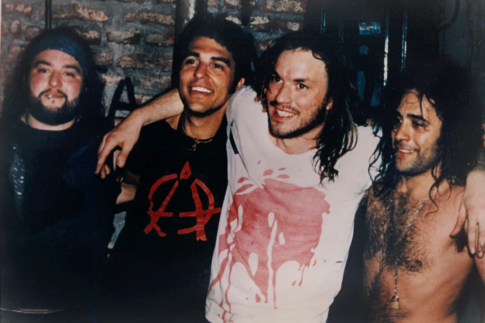

¿A dónde me lleva la vida?
Comienzos
La banda surgió en 1988 en el barrio de Mataderos, Buenos Aires. Gustavo Chizzo Nápoli, Raúl Locura Dilelio, Jorge Tanque Iglesias y Gabriel Tete Iglesias, conformaron La Renga para el final de ese año, cuando el 31 de diciembre realizaron una primera presentación para familiares y amigos. La Renga inició haciendo versiones de canciones de bandas como Creedence, Vox Dei y Manal, entre otra.
Esquivando charcos, el primer disco de La Renga, fue grabado en 1991 y consta de la primera formación oficial de la banda: Chizzo, Locura, Tete y Tanque. A ellos se suma Chiflo, que por aquel entonces tocaba su saxo para bandas de Punk Rock como Los Parias, Alerta Roja y El Mercader, de reggae como Los Cafres y de ska-rock como Los Auténticos Decadentes. Al escuchar su forma de soplar, Tete le propuso de inmediato "poner unos caños" en el disco que venían preparando.